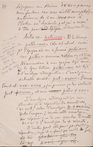

Legenda:
Elemento Terminologico: Rosso
Esempio linguistico latino: Giallo
Esempio linguistico greco: Verde
Data:Rosa
Nome proprio:Azzurro
Pagina 14

Testo in francese
dégageons un thème ἵππο- , nous
nous fondons sur une réalité morphologique
antérieure de deux ou trois mille ans à
Platon ou Sophocle, et qui a cessé
d'être pour epoque ces écrivains et leurs contemporains.
Autre ex. patercus Ns le decomp. en
patěr-cus Cela est absol. vrai
pour l'époque où on a formé patěrcus sur patěr- comme villi/cus ou vīlicus sur villa .
Néanmoins, à une époque déjà ancienne
dela langue latine, pater-cus est dejà
del'analyse rétrospective. L'analyse actuelle serait : pat-ercus . Preuve
format nouvelle, nov-erca , qui prouve qu'on isolait
pat + ercus , et non cus pater + cus .
L'analyse rétrospective ne
cherche qu'à répartir les membres
du mot, selon l' analyse la plus ancienne
de la langue; mais cette analyse
ne répond que dans un nombre limité
de cas à l'analyse la plus récente.
D'autre part, elle peut parfaitement y
répondre; ce qu'il ne faut pas oublier non pls:
dō-tōr ghutós = ghu-tos
δώ-τωρ Χυτός = Χυ τός
Testo in italiano
Quando isoliamo un tema ἵππο-, noi
ci fondiamo su una realtà morfologica
anteriore di 2000 o 3000 anni a
Platone e Sofocle, e che ha cessato
d’essere per quegli scrittori e per i loro contemporanei.
Altro esempio: patercus. Lo scomponiamo
in pater-cus. Ciò è assolutamente vero
per l’epoca in cui hanno formato patercus
su pater, come villicus o vīlicus su villa.
Nondimeno, a un’epoca già antica
della lingua latina, pater-cus è già
analisi retrospettiva. L’analisi
contemporanea sarebbe: pat-ercus. Prova:
nuova formazione: nov-erca, che dimostra che si isolava
pat + ercus, e non pater + cus.
L’analisi retrospettiva non tende che a suddividere i membri
della parola secondo l’analisi più antica
della lingua; ma quest’analisi
non risponde all’analisi più recente
se non in un numero limitato di casi.
D’altra parte, può perfettamente rispondervi,
e anche questo non dobbiamo dimenticarlo:
dō-tōr δώ-τωρ
Pagina 15

Testo in francese
En établissant les subdiv. du mot,
tel rac., thème ou suffixe, il
doit toujours être entendu que nous
nous plaçons à une l'époque, qu'elle éloignée ou rapprochée , où
cette analyse an se justifie par
l'intimitable ligne le sentiment
conforme de la langue. Époque variable,
puisque pour δώ-τωρ il n'y a pas à
remonter au-delà du grec, et pr
ἵππο-ς infiniment loin au-delà du grec.
Une morp. vraiment scientifique
aurait pr premier devoir de séparer
les diff. époques et de ne pas
et de se pénétrer exclusivement de l'esprit de chacune
d'elles, et de ne pas imposer des
cadres abolis depuis des siècles aux
formes historiques. Seulement
on n'aurait par là que des
aperçus très incomplets sur la
genèse de ces formes. Il est clair
que si je divisais pat-ercus
conformément au sent. latin d' unecertaine date,
je n'apercevrais pas le parallélisme
entre pater , pater-cus et villa , villi-cus (villă-cus) .
La pratique commande donc l'ana-
chronisme et la confusion des époques.
Testo in italiano
Nello stabilire le suddivisioni della parola,
come radice, tema o suffisso
sempre deve restare inteso che noi
ci poniamo all’epoca, lontana o
ravvicinata, in cui tale analisi si giustifica per
il sentimento conforme della lingua. Epoca variabile,
perché per δώ-τωρ non dobbiamo risalire prima del
greco, e per
ἵππο-ς infinitamente lontano prima del greco.
Una morfologia davvero scientifica
avrebbe per primo dovere di separare
le diverse epoche e
di penetrarsi esclusivamente dello spirito di ognuna
di esse, di non imporre alle
forme storiche un quadro abolito da secoli. Soltanto,
in questo modo non si avrebbe che
un’idea molto incompleta sulla
genesi di quelle forme. È chiaro
che se io dividessi pat-ercus,
conformemente al sentimento latino di una certa data,
non ravviserei il parallelismo
tra pater : pater – cus e villa : villi-cus (villă-cus).
La pratica comanda dunque l’ana-
cronismo e la confusione delle epoche.